Лучшие районы Москвы для жизни: рейтинг 2026
Общий рейтинг районов для жизни: 10 — лучше, 1 — хуже. Учитывает метро, МЦК и МЦД (20 %), дороги — сколько жилья приходится на крупные дороги вокруг (5 %), экологию (20 %), школы, сады и поликлиники (15 %), зелень и парки рядом с домом (15 %), тишину — сколько домов далеко от магистралей и станций (10 %), высотность — меньше домов от 18 этажей лучше (5 %), кафе и магазины рядом (5 %) и спорт (5 %). Каждый показатель оценён по своей шкале от 0 до 10, а не по месту среди районов. Плохое хорошим не перекрывается: итог не может быть выше, чем экология или транспорт района плюс 4 балла — район у завода или без метро в лидеры не попадёт. Цена жилья в балл не входит — она показана рядом, чтобы было видно, где хорошо и недорого.
В лидерах — Аэропорт, Мещанский, Измайлово. Замыкают список Капотня, Бирюлево Западное, Некрасовка.
Свой рейтинг: что важно вам
Подвиньте ползунки — рейтинг пересчитается под вас. Показатели те же, что в общем балле, по шкале от 0 до 10; правило слабого звена тоже действует: если экология или транспорт вам важны, район с провалом по ним наверх не поднимется. Ваши настройки запоминаются в этом браузере.
Цена — медианная цена метра в объявлениях о продаже квартир на вторичном рынке (Циан, ноябрь 2026), как во вкладке «Цены». Тишина, высотность и парки рядом — по домам из OpenStreetMap.
Таблица шире экрана — листайте её вбок →
| № | Район | Балл | Цена м² | Экология | До центра |
|---|---|---|---|---|---|
| 1 |  Аэропорт АэропортСАО | 7,1 | 505 тыс. ₽ | 6,1 | 24 мин |
| 2 | 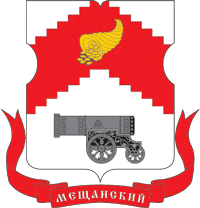 МещанскийЦАО | 7,1 | 651 тыс. ₽ | 6,5 | 18 мин |
| 3 |  Измайлово ИзмайловоВАО | 7,0 | 407 тыс. ₽ | 3,5 | 31 мин |
| 4 | 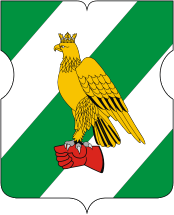 СокольникиВАО | 7,0 | 463 тыс. ₽ | 5,1 | 25 мин |
| 5 | 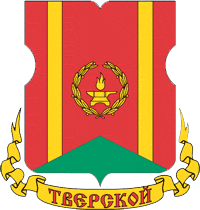 ТверскойЦАО | 6,8 | 765 тыс. ₽ | 7,2 | 12 мин |
| 6 |  Дорогомилово ДорогомиловоЗАО | 6,7 | 857 тыс. ₽ | 6,8 | 17 мин |
| 7 |  Останкинский ОстанкинскийСВАО | 6,7 | 517 тыс. ₽ | 5,5 | 33 мин |
| 8 |  Сокол СоколСАО | 6,6 | 515 тыс. ₽ | 7,2 | 27 мин |
| 9 | 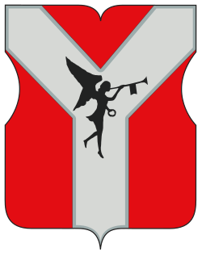 КрасносельскийЦАО | 6,6 | 594 тыс. ₽ | 7,2 | 16 мин |
| 10 | 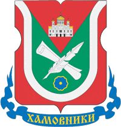 ХамовникиЦАО | 6,6 | 969 тыс. ₽ | 7,4 | 17 мин |
| 11 | 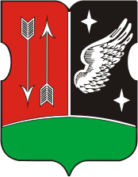 ГагаринскийЮЗАО | 6,6 | 552 тыс. ₽ | 6,7 | 25 мин |
| 12 | 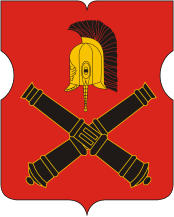 Фили-ДавыдковоЗАО | 6,5 | 500 тыс. ₽ | 6,1 | 27 мин |
| 13 |  Войковский ВойковскийСАО | 6,5 | 459 тыс. ₽ | 5,6 | 31 мин |
| 14 |  Тимирязевский ТимирязевскийСАО | 6,5 | 463 тыс. ₽ | 4,4 | 30 мин |
| 15 | Академический ЮЗАО | 6,5 | 524 тыс. ₽ | 6,7 | 30 мин |
| 16 | 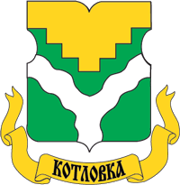 КотловкаЮЗАО | 6,5 | 471 тыс. ₽ | 6,1 | 29 мин |
| 17 | 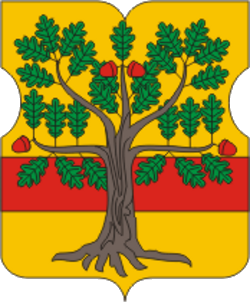 ЛомоносовскийЮЗАО | 6,5 | 493 тыс. ₽ | 5,5 | 31 мин |
| 18 |  Восточное Измайлово Восточное ИзмайловоВАО | 6,4 | 370 тыс. ₽ | 3,4 | 36 мин |
| 19 |  Преображенское ПреображенскоеВАО | 6,4 | 459 тыс. ₽ | 6,6 | 25 мин |
| 20 | 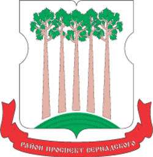 Проспект ВернадскогоЗАО | 6,4 | 556 тыс. ₽ | 5,4 | 31 мин |
| 21 |  Филевский парк Филевский паркЗАО | 6,4 | 581 тыс. ₽ | 4,6 | 27 мин |
| 22 |  Хорошевский ХорошевскийСАО | 6,4 | 649 тыс. ₽ | 6,5 | 26 мин |
| 23 | 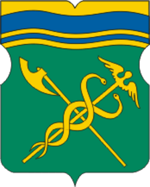 ЗамоскворечьеЦАО | 6,4 | 731 тыс. ₽ | 7,6 | 14 мин |
| 24 |  Крылатское КрылатскоеЗАО | 6,3 | 471 тыс. ₽ | 3,5 | 39 мин |
| 25 |  Раменки РаменкиЗАО | 6,3 | 729 тыс. ₽ | 6,3 | 29 мин |
| 26 |  Северный СеверныйСВАО | 6,3 | 394 тыс. ₽ | 4,6 | 53 мин |
| 27 | 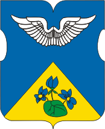 Покровское-СтрешневоСЗАО | 6,3 | 516 тыс. ₽ | 5,2 | 39 мин |
| 28 | 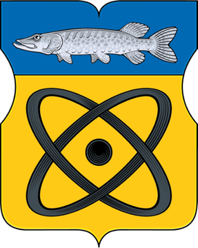 ЩукиноСЗАО | 6,3 | 521 тыс. ₽ | 5,2 | 34 мин |
| 29 | 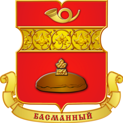 БасманныйЦАО | 6,3 | 626 тыс. ₽ | 7,7 | 17 мин |
| 30 | Якиманка ЦАО | 6,3 | 1 152 тыс. ₽ | 7,7 | 16 мин |
| 31 | 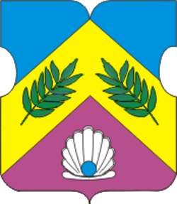 ЯсеневоЮЗАО | 6,2 | 384 тыс. ₽ | 3,3 | 48 мин |
| 32 |  Новогиреево НовогиреевоВАО | 6,1 | 415 тыс. ₽ | 5,9 | 40 мин |
| 33 |  Савеловский СавеловскийСАО | 6,1 | 525 тыс. ₽ | 6,3 | 23 мин |
| 34 |  Свиблово СвибловоСВАО | 6,1 | 484 тыс. ₽ | 7,9 | 37 мин |
| 35 | 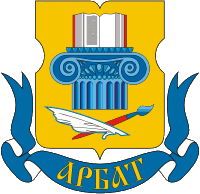 АрбатЦАО | 6,1 | 886 тыс. ₽ | 7,9 | 10 мин |
| 36 | 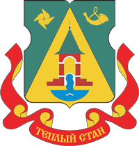 Теплый СтанЮЗАО | 6,1 | 398 тыс. ₽ | 5,1 | 43 мин |
| 37 |  Метрогородок МетрогородокВАО | 6,0 | 460 тыс. ₽ | 3,0 | 45 мин |
| 38 |  Тропарево-Никулино Тропарево-НикулиноЗАО | 6,0 | 469 тыс. ₽ | 5,6 | 37 мин |
| 39 |  Беговой БеговойСАО | 6,0 | 645 тыс. ₽ | 7,3 | 20 мин |
| 40 |  Марфино МарфиноСВАО | 6,0 | 568 тыс. ₽ | 7,4 | 31 мин |
| 41 |  Марьина роща Марьина рощаСВАО | 6,0 | 543 тыс. ₽ | 7,7 | 24 мин |
| 42 | 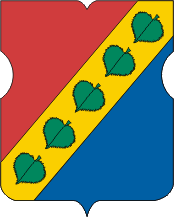 ЗюзиноЮЗАО | 6,0 | 465 тыс. ₽ | 5,6 | 31 мин |
| 43 | 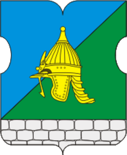 Северное БутовоЮЗАО | 6,0 | 393 тыс. ₽ | 4,6 | 49 мин |
| 44 | 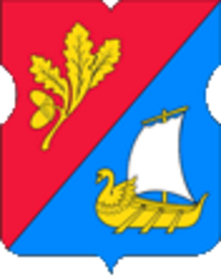 Старое КрюковоЗелАО | 6,0 | 322 тыс. ₽ | 4,2 | 88 мин |
| 45 |  Соколиная гора Соколиная гораВАО | 5,9 | 403 тыс. ₽ | 7,7 | 28 мин |
| 46 | 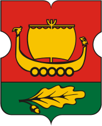 МитиноСЗАО | 5,9 | 399 тыс. ₽ | 4,5 | 53 мин |
| 47 |  Вешняки ВешнякиВАО | 5,8 | 318 тыс. ₽ | 5,4 | 44 мин |
| 48 |  Бескудниковский БескудниковскийСАО | 5,8 | 432 тыс. ₽ | 7,5 | 39 мин |
| 49 | 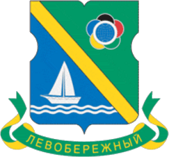 ЛевобережныйСАО | 5,8 | 533 тыс. ₽ | 5,4 | 37 мин |
| 50 |  Бутырский БутырскийСВАО | 5,8 | 506 тыс. ₽ | 8,1 | 25 мин |
| 51 |  Ростокино РостокиноСВАО | 5,8 | 520 тыс. ₽ | 7,3 | 36 мин |
| 52 | 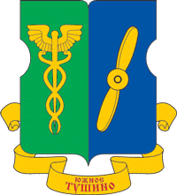 Южное ТушиноСЗАО | 5,8 | 396 тыс. ₽ | 4,5 | 46 мин |
| 53 | 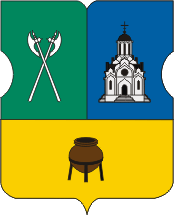 ТаганскийЦАО | 5,8 | 581 тыс. ₽ | 8,2 | 21 мин |
| 54 | Обручевский ЮЗАО | 5,8 | 529 тыс. ₽ | 5,4 | 37 мин |
| 55 | 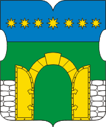 Южное БутовоЮЗАО | 5,8 | 343 тыс. ₽ | 4,0 | 63 мин |
| 56 | 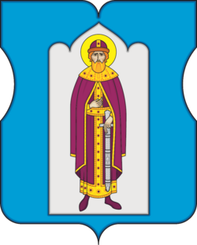 ДаниловскийЮАО | 5,8 | 643 тыс. ₽ | 8,2 | 22 мин |
| 57 |  Перово ПеровоВАО | 5,7 | 361 тыс. ₽ | 6,6 | 37 мин |
| 58 |  Кунцево КунцевоЗАО | 5,7 | 465 тыс. ₽ | 5,0 | 43 мин |
| 59 |  Солнцево СолнцевоЗАО | 5,7 | 437 тыс. ₽ | 5,1 | 49 мин |
| 60 |  Бабушкинский БабушкинскийСВАО | 5,7 | 443 тыс. ₽ | 7,7 | 40 мин |
| 61 | 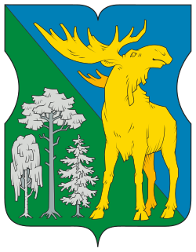 ЛосиноостровскийСВАО | 5,7 | 366 тыс. ₽ | 6,2 | 48 мин |
| 62 | 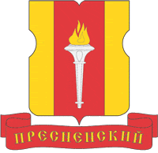 ПресненскийЦАО | 5,7 | 852 тыс. ₽ | 8,3 | 19 мин |
| 63 | 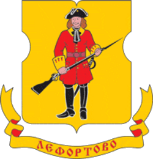 ЛефортовоЮВАО | 5,7 | 610 тыс. ₽ | 8,3 | 26 мин |
| 64 | 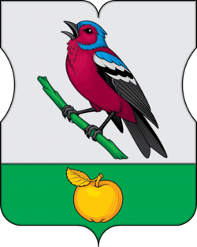 ЗябликовоЮАО | 5,7 | 363 тыс. ₽ | 4,6 | 48 мин |
| 65 |  Богородское БогородскоеВАО | 5,6 | 434 тыс. ₽ | 4,7 | 34 мин |
| 66 |  Ивановское ИвановскоеВАО | 5,6 | 346 тыс. ₽ | 4,1 | 43 мин |
| 67 |  Косино-Ухтомский Косино-УхтомскийВАО | 5,6 | 343 тыс. ₽ | 8,2 | 53 мин |
| 68 |  Алексеевский АлексеевскийСВАО | 5,6 | 519 тыс. ₽ | 8,1 | 29 мин |
| 69 | 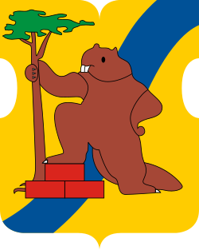 Хорошево-МневникиСЗАО | 5,6 | 675 тыс. ₽ | 6,5 | 34 мин |
| 70 | 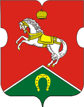 КоньковоЮЗАО | 5,6 | 409 тыс. ₽ | 6,0 | 41 мин |
| 71 | 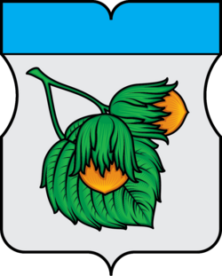 Орехово-Борисово СеверноеЮАО | 5,6 | 386 тыс. ₽ | 5,8 | 43 мин |
| 72 |  Восточный ВосточныйВАО | 5,5 | 331 тыс. ₽ | 3,9 | 55 мин |
| 73 | 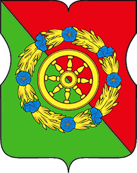 Северное ИзмайловоВАО | 5,5 | 378 тыс. ₽ | 6,5 | 36 мин |
| 74 |  Коптево КоптевоСАО | 5,5 | 427 тыс. ₽ | 5,7 | 36 мин |
| 75 |  Бибирево БибиревоСВАО | 5,5 | 353 тыс. ₽ | 5,6 | 42 мин |
| 76 | 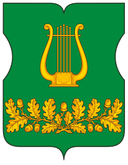 ЛианозовоСВАО | 5,5 | 387 тыс. ₽ | 6,5 | 45 мин |
| 77 | 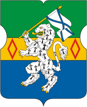 ТекстильщикиЮВАО | 5,5 | 395 тыс. ₽ | 8,5 | 35 мин |
| 78 |  Ховрино ХовриноСАО | 5,4 | 404 тыс. ₽ | 5,6 | 39 мин |
| 79 | 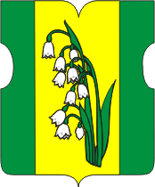 КуркиноСЗАО | 5,4 | 361 тыс. ₽ | 3,0 | 67 мин |
| 80 | 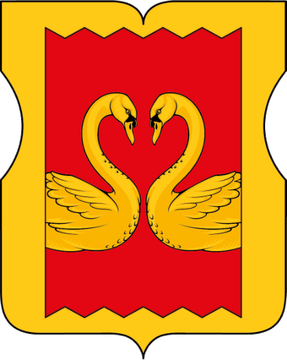 КузьминкиЮВАО | 5,4 | 419 тыс. ₽ | 5,7 | 39 мин |
| 81 | 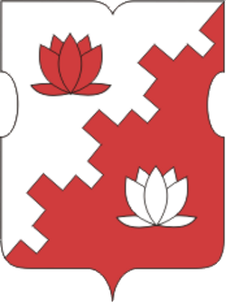 НагорныйЮАО | 5,4 | 496 тыс. ₽ | 8,6 | 28 мин |
| 82 |  Можайский МожайскийЗАО | 5,3 | 448 тыс. ₽ | 5,7 | 44 мин |
| 83 |  Ново-Переделкино Ново-ПеределкиноЗАО | 5,3 | 358 тыс. ₽ | 4,8 | 54 мин |
| 84 |  Силино СилиноЗелАО | 5,3 | 304 тыс. ₽ | 2,4 | 98 мин |
| 85 |  Восточное Дегунино Восточное ДегуниноСАО | 5,3 | 365 тыс. ₽ | 6,2 | 44 мин |
| 86 |  Головинский ГоловинскийСАО | 5,3 | 459 тыс. ₽ | 5,4 | 39 мин |
| 87 | 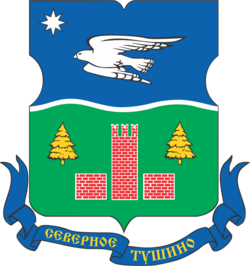 Северное ТушиноСЗАО | 5,3 | 400 тыс. ₽ | 4,8 | 49 мин |
| 88 | 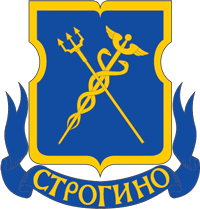 СтрогиноСЗАО | 5,3 | 435 тыс. ₽ | 4,6 | 46 мин |
| 89 | 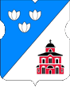 СавелкиЗелАО | 5,3 | 332 тыс. ₽ | 3,6 | 92 мин |
| 90 | 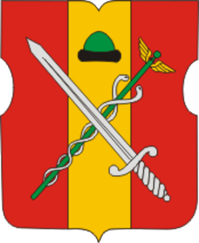 РязанскийЮВАО | 5,3 | 416 тыс. ₽ | 8,7 | 39 мин |
| 91 | 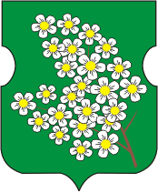 ЧеремушкиЮЗАО | 5,3 | 474 тыс. ₽ | 6,9 | 36 мин |
| 92 | 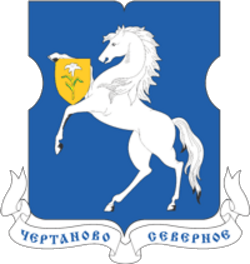 Чертаново СеверноеЮАО | 5,3 | 414 тыс. ₽ | 6,4 | 36 мин |
| 93 |  Гольяново ГольяновоВАО | 5,2 | 377 тыс. ₽ | 5,4 | 42 мин |
| 94 |  Крюково КрюковоЗелАО | 5,2 | 333 тыс. ₽ | 4,2 | 90 мин |
| 95 |  Отрадное ОтрадноеСВАО | 5,2 | 419 тыс. ₽ | 6,8 | 36 мин |
| 96 |  Матушкино МатушкиноЗелАО | 5,1 | 339 тыс. ₽ | 4,8 | 101 мин |
| 97 | 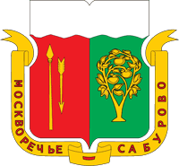 Москворечье-СабуровоЮАО | 5,1 | 423 тыс. ₽ | 8,0 | 37 мин |
| 98 | Нагатинский затон ЮАО | 5,1 | 478 тыс. ₽ | 7,4 | 31 мин |
| 99 | 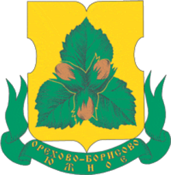 Орехово-Борисово ЮжноеЮАО | 5,1 | 382 тыс. ₽ | 6,6 | 47 мин |
| 100 | 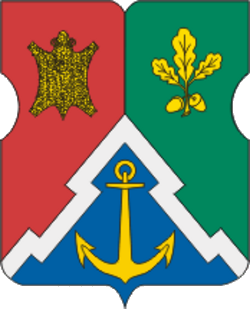 ЮжнопортовыйЮВАО | 5,0 | 527 тыс. ₽ | 9,0 | 25 мин |
| 101 | 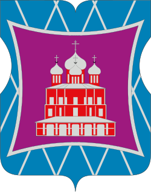 ДонскойЮАО | 5,0 | 511 тыс. ₽ | 9,0 | 24 мин |
| 102 | 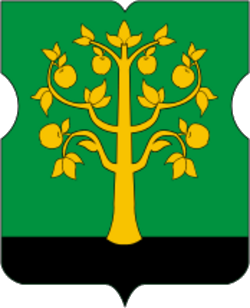 Нагатино-СадовникиЮАО | 5,0 | 493 тыс. ₽ | 9,0 | 29 мин |
| 103 | Царицыно ЮАО | 5,0 | 409 тыс. ₽ | 8,0 | 39 мин |
| 104 | Чертаново Центральное ЮАО | 5,0 | 421 тыс. ₽ | 7,0 | 39 мин |
| 105 |  Западное Дегунино Западное ДегуниноСАО | 4,9 | 481 тыс. ₽ | 8,6 | 42 мин |
| 106 | Молжаниновский САО | 4,9 | 317 тыс. ₽ | 4,2 | 70 мин |
| 107 | Нижегородский ЮВАО | 4,9 | 442 тыс. ₽ | 9,1 | 33 мин |
| 108 | Чертаново Южное ЮАО | 4,9 | 384 тыс. ₽ | 8,0 | 43 мин |
| 109 |  Очаково-Матвеевское Очаково-МатвеевскоеЗАО | 4,8 | 512 тыс. ₽ | 6,6 | 42 мин |
| 110 | Дмитровский САО | 4,8 | 395 тыс. ₽ | 7,1 | 48 мин |
| 111 |  Алтуфьевский АлтуфьевскийСВАО | 4,7 | 388 тыс. ₽ | 6,1 | 42 мин |
| 112 | Выхино-Жулебино ЮВАО | 4,7 | 355 тыс. ₽ | 6,9 | 48 мин |
| 113 | Люблино ЮВАО | 4,7 | 383 тыс. ₽ | 8,4 | 47 мин |
| 114 | Бирюлево Восточное ЮАО | 4,7 | 361 тыс. ₽ | 5,7 | 50 мин |
| 115 | Новокосино ВАО | 4,6 | 334 тыс. ₽ | 8,1 | 47 мин |
| 116 |  Южное Медведково Южное МедведковоСВАО | 4,6 | 395 тыс. ₽ | 6,2 | 42 мин |
| 117 |  Внуково ВнуковоЗАО | 4,5 | 311 тыс. ₽ | 6,6 | 69 мин |
| 118 |  Северное Медведково Северное МедведковоСВАО | 4,5 | 413 тыс. ₽ | 6,8 | 44 мин |
| 119 | Марьино ЮВАО | 4,5 | 360 тыс. ₽ | 9,5 | 48 мин |
| 120 | Печатники ЮВАО | 4,4 | 430 тыс. ₽ | 9,6 | 36 мин |
| 121 | Братеево ЮАО | 4,4 | 385 тыс. ₽ | 8,4 | 51 мин |
| 122 | Ярославский СВАО | 4,3 | 370 тыс. ₽ | 7,7 | 49 мин |
| 123 | Капотня ЮВАО | 4,1 | 288 тыс. ₽ | 9,8 | 59 мин |
| 124 | Бирюлево Западное ЮАО | 4,1 | 250 тыс. ₽ | 8,9 | 50 мин |
| 125 | Некрасовка ЮВАО | 3,5 | 316 тыс. ₽ | 9,1 | 65 мин |
Другие рейтинги
Нажмите на район, чтобы открыть его страницу с картой, плюсами и минусами. Данные обновлены в ноябре 2026.
Данные: экорейтинг EcoStandard и замеры Мосэкомониторинга, цены — объявления Циана (ноябрь 2026), транспорт, школы, поликлиники, спорт и магазины — OpenStreetMap (ноябрь 2026), население — Росстат и Wikidata 2025, гербы — Викисклад. Подробно о методике — на страницах экологии, цен, транспорта, городской среды и географии. Все районы Москвы · Рейтинги районов: лучшие, экология, зелёные, дешёвые, транспорт, для семьи.